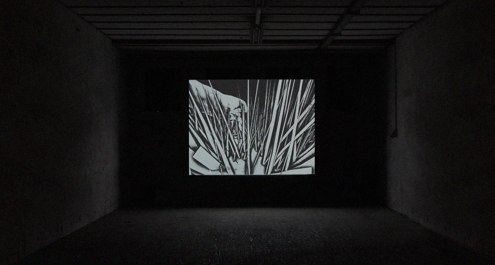
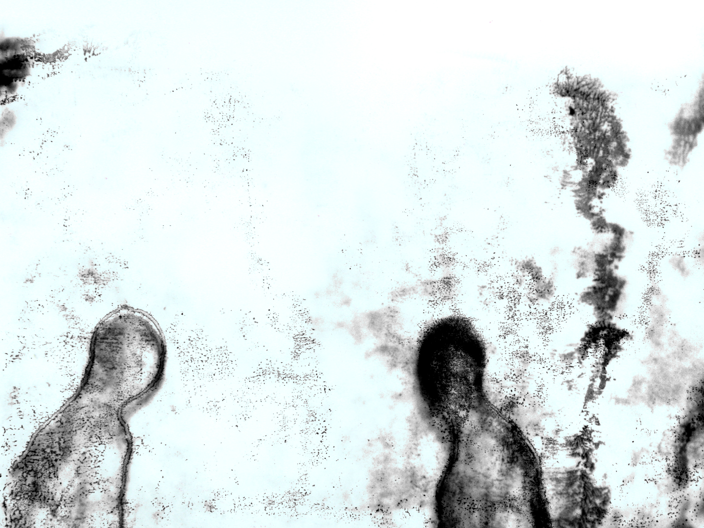
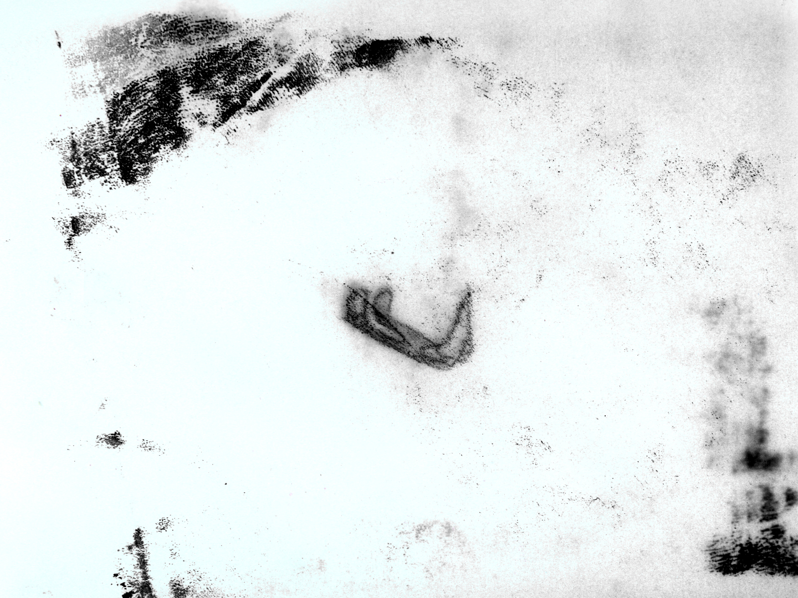
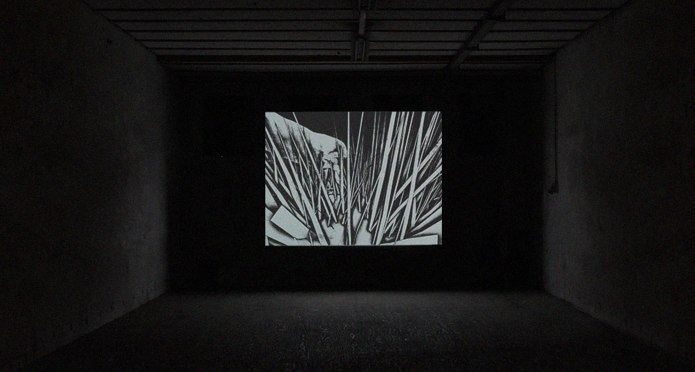
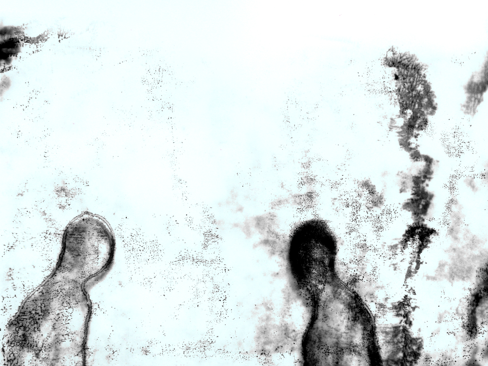
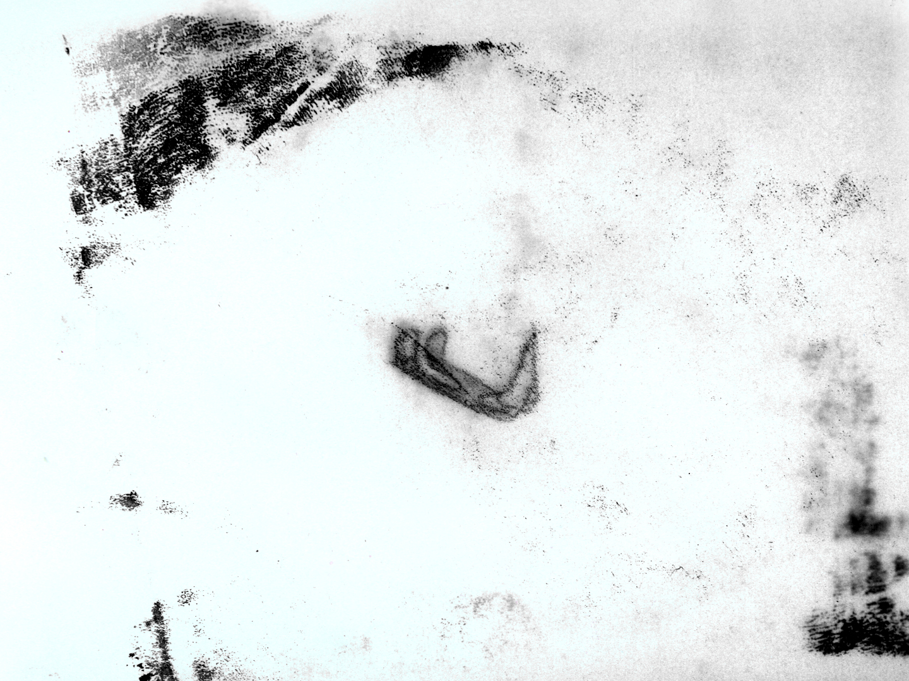
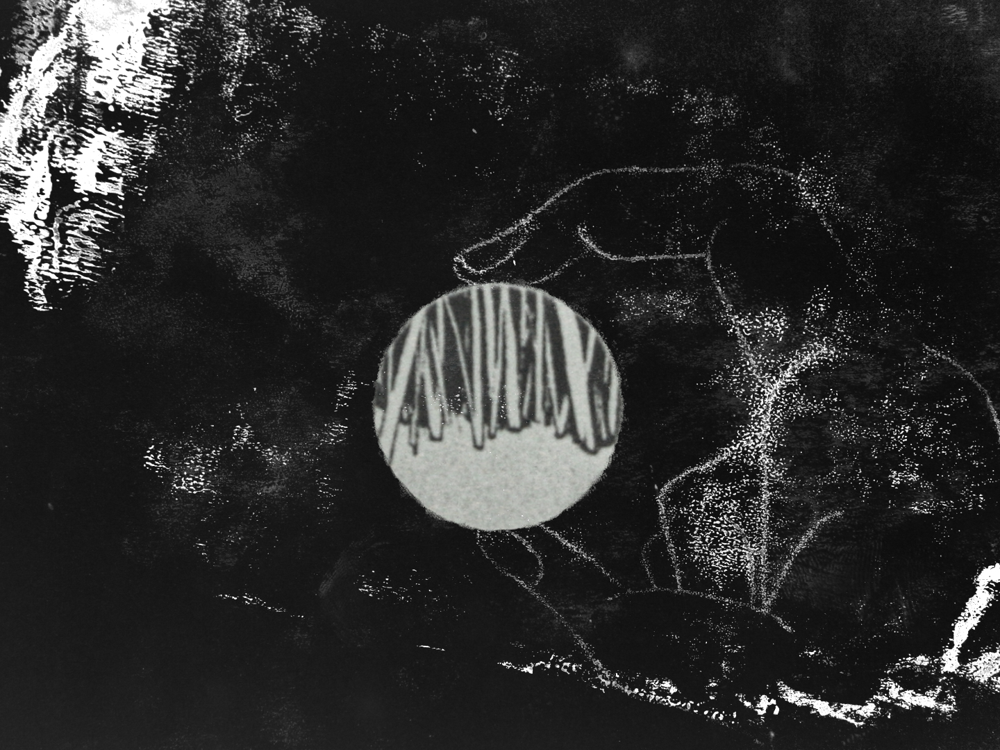
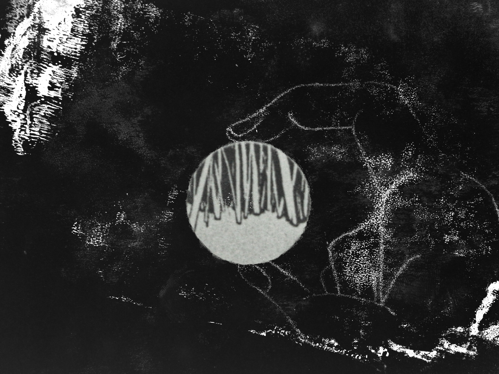

From the primitive touch to a ‘twist, press, click’—— Piles of images generate and decay into the soil, they are the real flesh, also the intangible memory.
Animation & Sound by Yujie Xu
Music by Perila
Voice by Matt Hamilton
Duration: 05'15''
Medium: 2D, 3D, monoprinting, mixed media
Year: 2022
Exhibitions:
"We Are All Made of Stars": MOMus, Greece 12/12/2024–23/02/2025
“Algorithmic lies”, Video Art Miden, LÁ Art Museum, Iceland 09/14–10/31, 2024
Screenings & Awards:
CURRENTS 2024, Santa Fe, USA
TRICKY WOMEN/TRICKY REALITIES 2024, Vienna
Anifilm 2023, Liberec, Czech Republic
Video Art Miden 2023, Greece
Fest Anča 2023, Slovakia
ShorTS Film Festival 2023, Italy
Asolo Art Film Festival 2023, Italy
CINETORO 2023, Colombia
Dunhuang Intl. Animation Week 2023, China
TOPU Intl. Animation Week 2023, China
Press:
ZippyFrames
 





 
